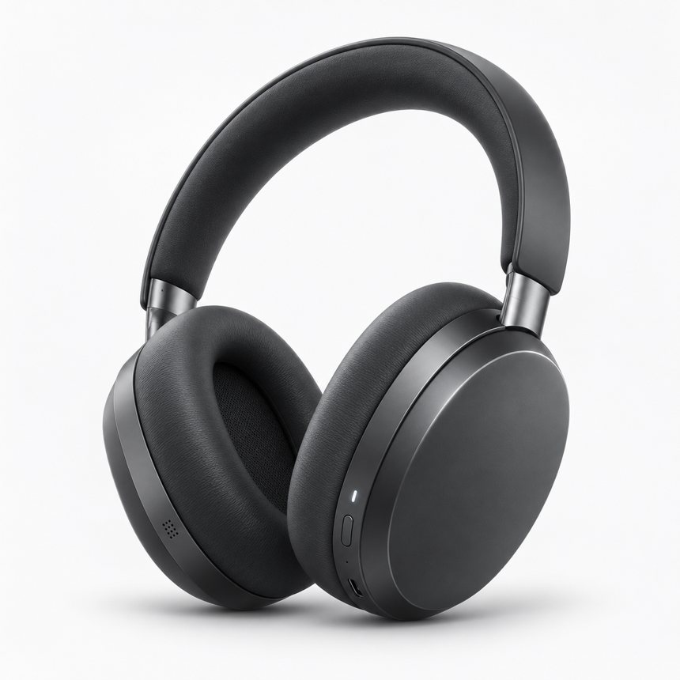

KIEN
.CSS
← Quay về danh sách
LAB 07 / EXERCISE 09
Using Positioning
Chồng chữ lên ảnh bằng absolute.
▶ Chạy code
↻ Chạy lại
Nhấn “Chạy code” để hiển thị bài trên trình duyệt.

Âm thanh trọn vẹn
Tiêu đề đặt chồng lên ảnh bằng absolute positioning
← Exercise 7.8
HTML & CSS · Lab 07
Exercise 7.10 →